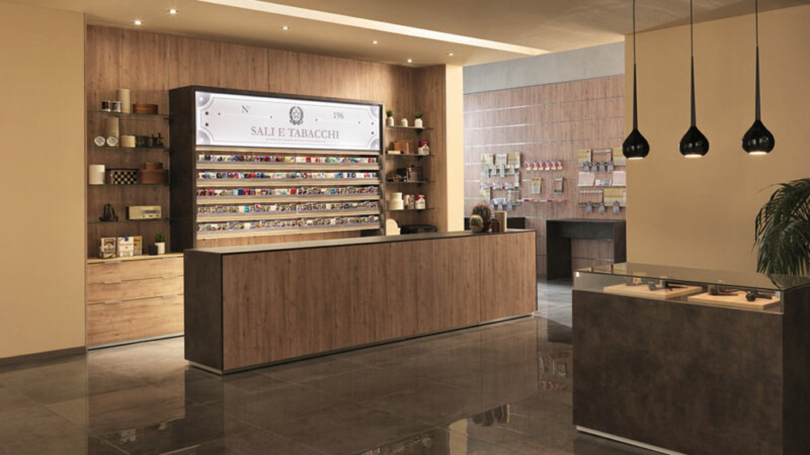
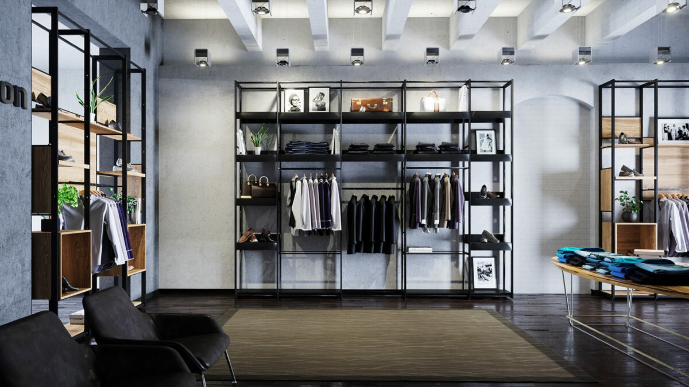

Il negozio compete
sull'esperienza, non sul prezzo.
L'arredo retail ha due vite: quella lunga della struttura e quella breve dell'esposizione, che cambia a ogni stagione. Costruiamo la prima perché duri e la seconda perché si riconfiguri senza chiamare un falegname.

Un negozio comincia a vendere prima che qualcuno entri: con la vetrina, con la luce, con il modo in cui il prodotto viene accompagnato.
L'arredo racconta il marchio
Due negozi possono vendere gli stessi prodotti e sembrare mondi diversi. La differenza la fanno i materiali, le proporzioni, il ritmo con cui gli oggetti sono esposti. Lavoriamo con chi ha già un'identità, per tradurla in banchi, scaffali e camerini coerenti, e con chi la sta ancora cercando, aiutandolo a trovarla senza inseguire le mode del momento.
Il prodotto al centro
L'arredo migliore è quello che non ruba la scena. Gli espositori devono far vedere bene la merce, farla toccare quando serve e rendere facile per chi lavora in negozio rifornire e riordinare. Studiamo altezze, profondità e illuminazione insieme, perché un ripiano troppo basso o una luce troppo dura bastano a far passare inosservato un buon prodotto.
Pensato per essere vissuto ogni giorno
Un negozio è un luogo di lavoro prima ancora che di vendita: porte che si aprono cento volte al giorno, carrelli, cartoni, clienti con i cappotti bagnati. Scegliamo finiture che resistono all'uso e che si possono ripulire o ripristinare, perché un arredo bellissimo ma delicato smette presto di esserlo.
Aprire quando si è deciso
Per un negozio ogni giorno di ritardo è un giorno senza incassi. Per questo costruiamo un calendario realistico con il committente, produciamo in officina quello che serve su misura e coordiniamo gli altri fornitori, dagli impianti alle insegne. L'obiettivo è semplice: arrivare all'inaugurazione senza passare gli ultimi giorni a rincorrere i dettagli.
Spazi vendita
che raccontano il brand.
Un negozio si legge in pochi secondi dalla vetrina. Lavoriamo su percorso del cliente, luce ed esposizione perché il prodotto sia protagonista, con materiali e sistemi che reggono il traffico quotidiano e i cambi di stagione.
- Boutique e negozi moda
- Showroom e concept store
- Profumerie e retail beauty
- Gioiellerie e ottiche
- Farmacie e parafarmacie
- Telefonia ed elettronica
- Store sportivi
- Temporary shop e franchising


Progetti
Arredo negozi & retail.
Filtra per ambito per vedere solo i progetti della categoria che ti interessa.